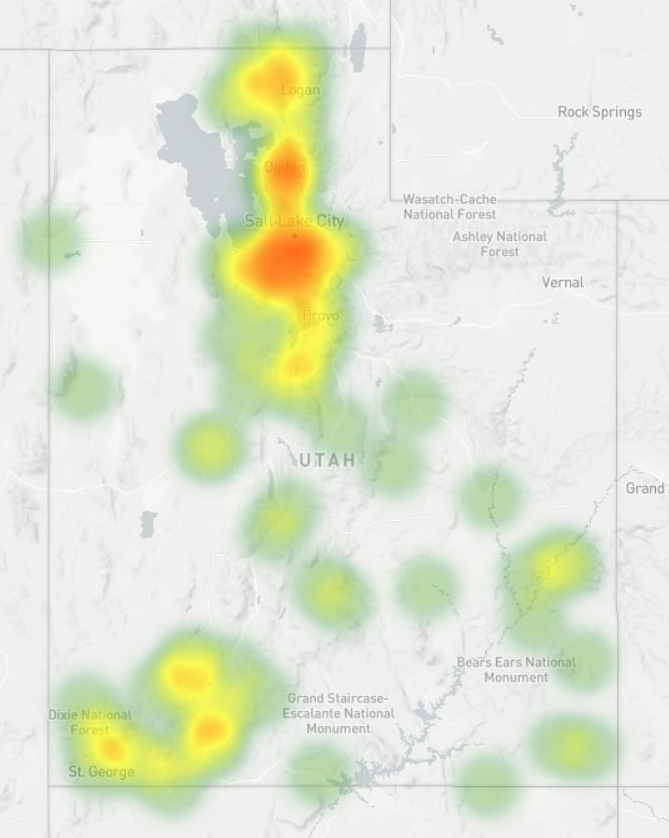
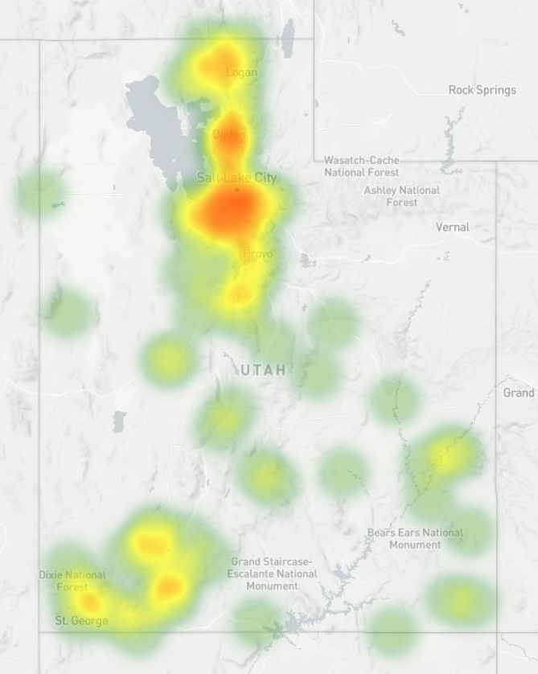
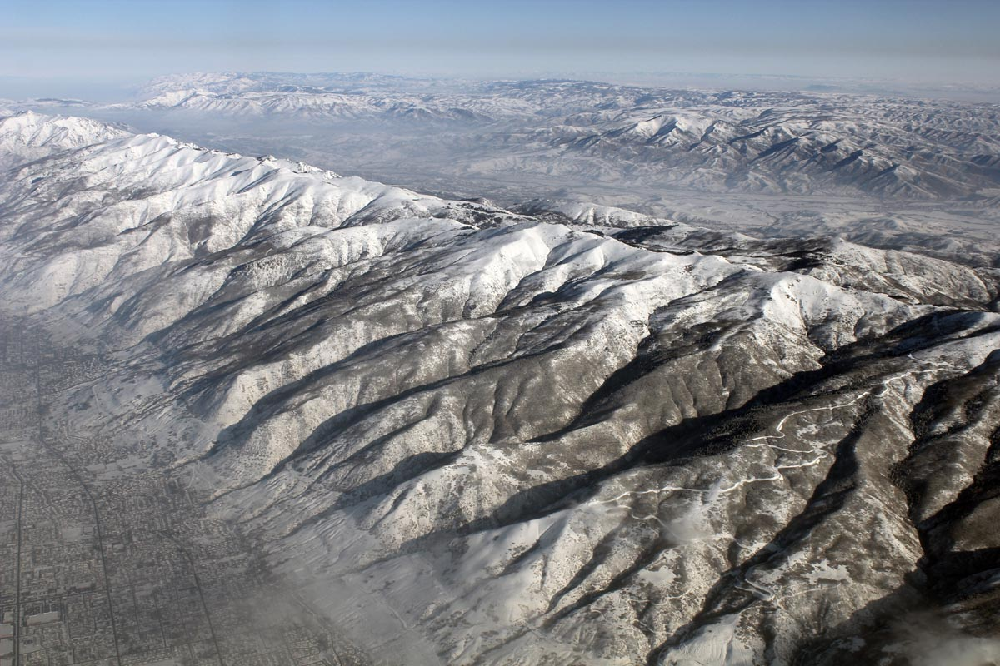
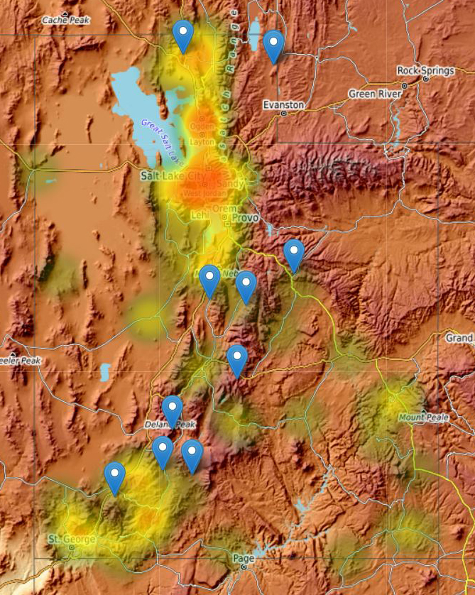
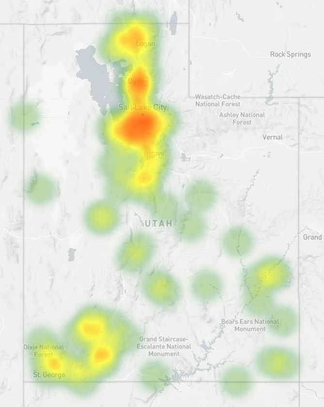
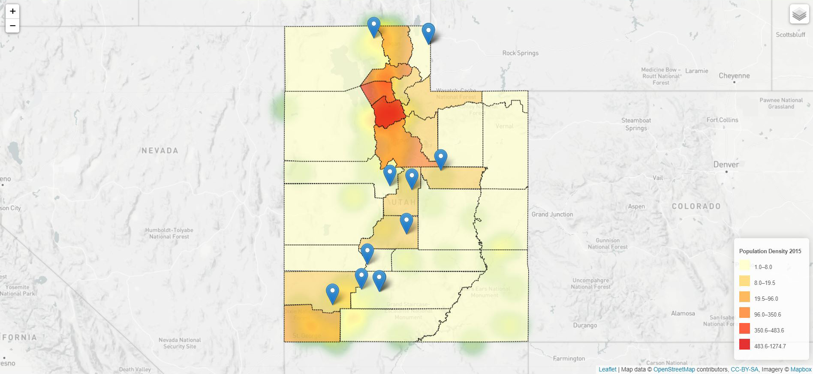

The Wasatch Fault is located on the western edge of the Wasatch Mountains in the states of Utah and Idaho. The Fault is 390 kilometers long, stretching from southern Idaho to central Utah. The five segments of the Fault are considered active. The segments are called the Nephi Fault segment, the Provo Fault segment, the Salt Lake City Fault segment, the Weber Fault segment, and the Brigham City Fault segment. On average the active segments are 40 kilometers long, each of which can produce powerful earthquakes whose magnitude is above 6.0.
 
The first figure presents the location of the earthquakes with a magnitude of above 4.0. These earthquakes occurred between 2000 and 2015. In general, 4.0 is recognized as the minimum magnitude of physical damage in the Richter scale. When combining the point layer with this topography base map, you can find that those earthquakes occurred along the Wasatch Fault.
The second figure shows the population density in Utah 29 counties. As seen on the density map, Salt Lake City has the highest population density. Although this city was not damaged by the earthquakes, given that this city is located close to the Fault, it seems that preparing for future earthquakes is required.
The third figure expressed the density of the fire departments in the state of Utah as a heatmap. When combining these three layers, we can prepare for future earthquakes in specific areas where the population density is high and fire departments are insufficient as well as an earthquake is expected to occur.

utah_earthquake4.geojson
- Data Explanation: Earthquakes Information in Utah
- GitHub URL: https://andyjung82.github.io/CRP558/assignment2_geojson/utah_earthquake4.geojson
- Source Data URL: https://earthquake.usgs.gov/earthquakes/search/
pop_den.geojson
- Data Explanation: Population Density Information in 29 counties, Utah
- GitHub URL: https://andyjung82.github.io/CRP558/assignment2_geojson/pop_den.geojson
- Source Data URL: https://opendata.utah.gov/Government-and-Taxes/Population-Density-By-Land-Area-And-County-In-Utah/bzur-buif
Utah_fire.geojson
- Data Explanation: Fire Department Location in Utah
- GitHub URL: https://andyjung82.github.io/CRP558/assignment2_geojson/Utah_fire.geojson
- Source Data URL: https://opendata.utah.gov/dataset/Utah-Emergency-Medical-Service-Facilities/un92-aygk
Wasatch.jpg
- GitHub URL: https://andyjung82.github.io/CRP558/assignment2_image/wasatch.jpg
- Source Data URL: https://marlimillerphoto.com/images/130102-49.jpg